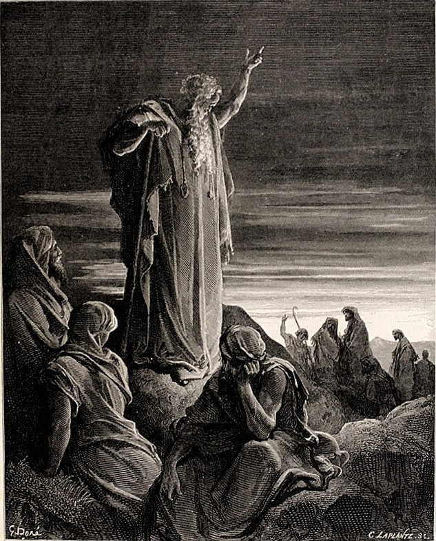

Ezekiel 36 — The Mister Translation

Ezekiel 36. This Doré plate was made for the prophet in general, not for this chapter, and it is lettered only “Ezekiel Prophesying”. It fits verse 1 loosely: the prophet is told to speak to the mountains of Israel, and Doré puts him on a height with hills behind him. The listeners, the dusk and the shepherd’s staff are his, not the text’s.
.jpg){kind=link}
Translator's Notes — verse by verse
⭐ A prophet who speaks to mountains. “Prophesy to the mountains of Israel” stands in this one verse. The command that follows, “mountains of Israel, hear”, stands in three verses of the Hebrew Bible: verses 1 and 4 here, and Ezekiel 6:3 (now on these pages), where the same mountains are told that a sword is coming and their high places will be destroyed. This chapter gives them the reverse message. The ASV has “Ye mountains of Israel, hear the word of Jehovah”, the NWT 1984 “O mountains of Israel, hear the word of Jehovah” and the TLB “Tell them: ‘Listen to this message from the Lord.”
⭐ “Aha!” and the ancient high places. The enemy’s cry is he’ach, a gloating shout, and what it gloats over is “the ancient high places”, which stands in this one verse: bamot olam, the hilltop shrines (dictionary), claimed as “a possession for us”, morashah. The KJV has “Aha, even the ancient high places are ours in possession”, the NIV “The ancient heights have become our possession”, the NWT 1984 “Even the high places of old time” and the TLB “claimed your ancient heights as theirs”. The Douay has “the everlasting heights are given to us for an inheritance”; olam can mean either “ancient” or “everlasting”, and the English shelf splits on it.
⭐ Desolated, snapped at, talked about. The verse piles up verbs: “they have laid you desolate and snapped at you”, shammot veshaof, stands in this one verse. The second verb is a rare one for panting or snapping at, and the versions disagree about it: the KJV has “swallowed you up on every side”, the NIV “ravaged and crushed you from every side”, the NWT 1984 “a snapping at YOU from all sides” and the Douay “trodden under foot on every side”. The ending, “the ill report of the people”, is dibbat-am. Dibbah (dictionary) is the noun of the spies’ “bad report” of the land (Numbers 13:32, now on these pages) and of Joseph’s “bad report” of his brothers (Genesis 37:2, now on these pages), so the land that was given a bad report once is given one again (verse 13 comes back to it). The ASV has “the evil report of the people”, the NIV “the object of people’s malicious talk and slander”, the NWT 1984 “there is a bad report among people” and the Douay “the reproach of the people”.
⭐ Six listeners. The word is sent to the mountains, the hills, the streambeds, the valleys, the desolate ruins and the abandoned cities, and verse 6 sends it to the first four again. The word for streambeds, afiqim, is a dry channel that fills in the rains, and the shelf has five names for it: the KJV has “rivers”, the ASV “watercourses”, the NIV “ravines”, the NWT 1984 “streambeds” and the Douay “brooks”. What the listeners have become is baz and la’ag, “plunder and mockery”: the KJV has “a prey and derision” and the NWT 1984 “plunder and for ridicule”.
⭐ Edom, and a pastureland. Of all “the remnant of the nations” one is named, Edom, “all of it”: the KJV and the Geneva print “all Idumea”, the Greek form of the name. The charge is that they made Israel’s land their own “with the joy of every heart, with scorn of soul”, and the last two phrases are the hard ones: lema’an migrashah lavaz. Migrash is the pastureland that ringed a Levitical town (dictionary), and it is also built on garash, to drive out, so two readings stand side by side on the shelf. The NIV has “so that they might plunder its pastureland”, the NWT 1984 “for the sake of its pasture ground”, the KJV “to cast it out for a prey” and the Douay “cast it out to lay it waste”. The translation keeps the noun: “for the sake of its pastureland, for plunder”.
⭐ The hand lifted, the shame borne. One verb runs through verses 6 and 7, nasa, to lift or carry: the mountains “have borne” (nesatem) the nations’ shame, Jehovah has “lifted up” (nasati) his hand, and the nations “will bear” (yissa’u) their own. The lifted hand is an oath, and “I have lifted up my hand” stands in seven verses of the Hebrew Bible: Exodus 6:8 and Numbers 14:30 (both now on these pages), where the oath concerns this very land, and Ezekiel 20:23, 20:28 and 20:42 (now on these pages), 47:14 and this verse. The KJV has “I have lifted up mine hand”, the ASV “I have sworn, saying”, the NIV “I swear with uplifted hand” and the NWT 1984 “I myself have raised my hand”.
⭐ “I am for you.” “Behold, I am toward you”, hineni alekhem, stands in two verses of the Hebrew Bible: here, and Ezekiel 13:8 (now on these pages), where the same two words mean “I am against you”. The singular, “behold, I am toward you”, hineni elekha, stands in ten verses of the Hebrew Bible. In every one of the ten Jehovah is against the one addressed (Jeremiah 21:13, 50:31 and 51:25, Nahum 2:14 and 3:5, and five in Ezekiel). Verse 9 is the one place where the words are turned to the good. The KJV has “behold, I am for you”, the NIV “I am concerned for you”, the NWT 1984 “here I am in favor of YOU”, the NWT 2013 “I am with you” and the Geneva “behold, I come unto you”. What follows is a farmer’s sentence, “you will be tilled and sown”, which stands in this one verse; avad, here “tilled”, is the verb of the human who works the ground (Genesis 2:5, now on these pages).
⭐ Multiply, and be fruitful. “I will multiply humankind upon you” stands in two verses of the Hebrew Bible, 10 and 11, with adam, humankind, and in verse 11 “and beast”. The blessing is the old one with its order turned: “they will increase and be fruitful”, veravu ufaru, stands in this one verse. “Be fruitful and multiply” stands in six verses of the Hebrew Bible, five of them in Genesis (Genesis 1:22, now on these pages, is the first, then 1:28, 8:17, 9:1 and 9:7) and the sixth Jeremiah 23:3. The promise then goes further than the beginning: “than at your beginnings”, mereshoteikhem, stands in this one verse. The KJV has “do better unto you than at your beginnings”, the NIV “make you prosper more than before”, the NWT 1984 “I will do more good than in YOUR initial state” and the Douay “give you greater gifts, than you had from the beginning”.
⭐ From “you” plural to “you” singular. In the middle of verse 12 the address narrows: “upon you” is still the plural mountains, but the verbs that follow go singular, “they will possess you, and you will be an inheritance to them”. The last clause uses shakal, to bereave of children (dictionary), the word of Jacob’s “if I am bereaved, I am bereaved” (Genesis 43:14, now on these pages). The ASV has “bereave them of children”, the KJV “bereave them of men”, the NIV “deprive them of their children”, the NWT 2013 “never again make them childless” and the Douay “be without them”. The TLB has “a place for burning their children on idol altars”, a gloss on shakal that the Hebrew does not carry.
⭐ A land that eats people. The nations’ taunt is “a devourer of humankind”, ochelet adam, which stands in this one verse, and it is an old charge against this land: the spies came back saying that it was “a land that eats up its inhabitants”, which stands in this one verse (Numbers 13:32, now on these pages), in the same verse that calls their report a dibbah, the word of verse 3. The KJV has “Thou land devourest up men, and hast bereaved thy nations”, the ASV “Thou land art a devourer of men”, the NIV “You devour people and deprive your nation of its children”, the NWT 1984 “A devourer of humankind is what you yourself are”, the TLB “Israel is a land that devours her people!” and the Douay “Thou art a devourer of men, and one that suffocatest thy nation”. The answer in verse 14 is a flat reversal, “you will devour humankind no more”, and the Geneva has “neither waste thy people henceforth”.
⭐ Five readings in three verses. These three verses carry five ketiv/qere pairs, words the scribes wrote one way and told the reader to say another, all kept in the Hebrew column with the written form first and the read form after it. In verse 13 the old spelling of “you” (feminine, addressed to the land) is read with its short form, and goyekh, “your nation”, is read goyayikh, “your nations”. Verse 14 repeats that pair and adds a second, a change of verb: it is written tikhshali, “you will cause to stumble”, and read teshakkeli, “you will bereave”, the same three consonants shuffled. Verse 15 has the nation pair once more. The translation follows the reading, “nations” and “bereave”, and the shelf is split on exactly this point: the KJV has “neither bereave thy nations any more”, the NWT 1984 “your nations you will no more bereave of children”, while the ASV has “neither bereave thy nation any more”, the NIV “make your nation childless” and the Douay “nor destroy thy nation any more”, which take the written singular.
⭐ Shame and reproach, then stumbling. Verse 15 gathers the words of verses 6 and 7, “the shame of the nations” and “the reproach of the peoples”, and promises that the land will no longer carry either, nor make its nations stumble. The KJV has “neither shalt thou cause thy nations to fall any more”, the ASV “neither shalt thou cause thy nation to stumble any more” and the NWT 1984 “your nations you will no more cause to stumble”.
⭐ A way like menstrual impurity. The charge against the house of Israel is that they made the ground unclean “by their way and by their deeds”, and the image is exact: “like the uncleanness of a woman in her menstrual impurity” stands in this one verse, niddah being the word of the monthly separation (dictionary; Leviticus 15:19, now on these pages). The KJV has “the uncleanness of a removed woman”, the ASV “the uncleanness of a woman in her impurity”, the NIV “a woman’s monthly uncleanness”, the NWT 1984 “Like the uncleanness of menstruation”, the Geneva “the filthiness of the menstruous” and the TLB “as foul as filthy rags”, a different figure. The land itself is what is defiled, by “the blood that they had shed” and “their idols” (gillulim, dictionary); that blood corrupts a land is the law of Numbers 35:33 (now on these pages), and that a defiled land can vomit out its people is Leviticus 18:28 (now on these pages). The NWT 1984 has “their dungy idols” and the NWT 2013 “their disgusting idols”.
⭐ He came, they profaned. In verse 20 the Hebrew has a singular verb, vayavo, “and he came”, with the house of Israel as one body, and then a plural, vayechallelu, “and they profaned” (dictionary). The profaning is done by what is said about them: be’emor lahem, which says literally “in the saying to them”. The shelf splits: the KJV has “when they said to them”, while the ASV has “in that men said of them”, the NIV “for it was said of them” and the Douay “when it was said of them”. The words said are “These are the people of Jehovah, and from his land they have come out”, and the TLB supplies the meaning behind them: “he couldn’t protect them from harm”.
⭐ Pity for a name. The verse is the reason for what follows. The law had already forbidden the act: “you shall not profane my holy name” (Leviticus 22:32, now on these pages), and Leviticus 20:3 (now on these pages) uses the same words of the one who gives his offspring to Molech. The prayer of Moses had made the same point from the other side, that the nations would talk (Numbers 14:15–16 and Exodus 32:12, both now on these pages). What Jehovah now feels is chamal, pity (dictionary), and what it is felt for is his own name. The KJV has “I had pity for mine holy name”, the ASV “I had regard for my holy name”, the NIV “I had concern for my holy name”, the NWT 1984 “I shall have compassion on my holy name”, the Geneva “I favored mine holy Name” and the Douay “I have regarded my own holy name”.
⭐ Not for your sake. “Not for your sake am I acting” stands in two verses of the Hebrew Bible, both in this chapter, 22 and 32. The line has an older twin in Deuteronomy 9:5 (now on these pages), where the entry into the land is “not for your righteousness”. The KJV has “I do not this for your sakes”, the ASV “I do not this for your sake”, the NIV “It is not for your sake”, the NWT 1984 “Not for YOUR sakes am I doing [it]”, the TLB “not because you deserve it” and the Douay “It is not for your sake that I will do this”.
⭐ I will sanctify my great name. “My great name” stands in two verses of the Hebrew Bible, Jeremiah 44:26 and this one. The act is qiddashti, “I will sanctify”, and the means is the people: “when I am sanctified in you” stands in this one verse. This is the verb of Leviticus 22:32 turned round, “I will be sanctified among the children of Israel”. The KJV has “when I shall be sanctified in you before their eyes”, the NWT 1984 “when I am sanctified among YOU before their eyes”, the NIV “when I am proved holy through you before their eyes” and the TLB “I will be honored before their eyes”.
⭐ Take, gather, bring. The three verbs of verse 24, lakachti, qibbatsti, hevetí, are the same three that Ezekiel 37:21 uses with “from among the nations … from all around, and bring them to their own ground” (Ezekiel 37:21, now on these pages), and the gathering from the ends of the heavens is promised in Deuteronomy 30:3–4 (now on these pages). The place they are brought to is admatkhem, “your own ground”. The KJV has “bring you into your own land”, the NWT 1984 “bring YOU in upon YOUR soil” and the NIV “bring you back into your own land”.
⭐ Clean water. “Clean water” stands in this one verse, and the verb is not the usual one for purifying. The water of purification is hizzah, “sprinkle”, in the law of the ashes (Numbers 19:18, now on these pages), but the verb here is zaraq (dictionary), to dash or throw, the word for blood thrown against the altar (Exodus 24:6, now on these pages). Most of the shelf has the familiar word: the KJV has “Then will I sprinkle clean water upon you”, the NIV “I will sprinkle clean water on you” and the NWT 1984 “I will sprinkle upon YOU clean water”, while the Geneva has “Then will I pour clean water upon you” and the Douay “I will pour upon you clean water”. The translation keeps “sprinkle” and names the verb here. The water is for “all your uncleannesses” and “all your idols”. The New Testament puts water and spirit side by side (John 3:5, now on these pages: “born of water and spirit”) and speaks of “bodies washed with pure water” (Hebrews 10:22, now on these pages), and readers have long heard these verses behind them; neither passage names Ezekiel.
⭐ A new heart, a heart of flesh. The promise (lev, heart: dictionary) has four parts, and each is a pair. “A new heart” stands in two verses of the Hebrew Bible, Ezekiel 18:31 (now on these pages) and this one; “a new spirit” stands in three, Ezekiel 11:19 (now on these pages), 18:31 (now on these pages) and this one. “The heart of stone” stands in two verses of the Hebrew Bible, Ezekiel 11:19 (now on these pages) and here. “A heart of flesh” stands in two verses of the Hebrew Bible, the same two. The KJV has “the stony heart out of your flesh”, the NIV “your heart of stone”, the NWT 1984 “the heart of stone from YOUR flesh” and the TLB “new hearts of love”, an addition to the Hebrew. The other prophets say the same thing in other words: a heart circumcised (Deuteronomy 30:6, now on these pages), a law written on the heart (Jeremiah 31:32, now on these pages), a heart given to know Jehovah (Jeremiah 24:7, now on these pages), and a prayer for it, “a clean heart — create one for me” (Psalm 51:12, now on these pages). Paul’s “tablets of human hearts” (2 Corinthians 3:3, now on these pages) is the nearest New Testament sentence.
⭐ My spirit within you. In verse 26 the new spirit is put beqirbekhem, “in your inward part”, and in verse 27 it is Jehovah’s own: “And I will put my spirit in you”, with bakhem, “in you”, stands in one verse of the Hebrew Bible, Ezekiel 37:14 (now on these pages), where it is said to the dry bones; here the preposition is beqirbekhem again. What the spirit does is described by a verb of making: va’asiti et asher, “I will make it so that you walk”. The KJV has “cause you to walk in my statutes”, the NIV “move you to follow my decrees”, the NWT 1984 “I will act so that in my regulations YOU will walk” and the TLB “so that you will obey my laws”. The order is statutes first and judgments second; Ezekiel 37:24 reverses it, “in my judgments they will walk, and my statutes they will keep” (Ezekiel 37:24, now on these pages).
⭐ The covenant sentence. “And you will be my people” stands in three verses of the Hebrew Bible: Jeremiah 11:4, Jeremiah 30:22 (now on these pages) and this one. The sentence as a whole is older: “I will walk among you, and be your God, and you shall be my people” (Leviticus 26:12, now on these pages), and it is in the other form in Ezekiel 37:23 (now on these pages), where it is said of the sons of Israel in the third person. The land is the one promised to the fathers, and the KJV, ASV and Geneva all print “in the land that I gave to your fathers”.
⭐ Saved, and a call to the grain. The verb of the salvation is hoshati, “I will save you”, and what Israel is saved from is again “all your uncleannesses”. Then comes an odd sentence: “and I will call to the grain” stands in this one verse. The grain is spoken to as the mountains were in verse 1, and it is the reverse of the famine of 2 Kings 8:1 (now on these pages), where “Jehovah has called for a famine”. The versions divide on the preposition: the NWT 1984 keeps “call to the grain and make it abound”, while the KJV has “I will call for the corn”, the NWT 2013 “summon the grain” and the NIV “I will call for the grain and make it plentiful”.
⭐ No more reproach of famine. Verse 30 closes with the reproach of verses 6 and 15, now said of hunger: “the reproach of famine among the nations”. The ASV has “receive no more the reproach of famine among the nations”, the NWT 2013 “never again suffer the disgrace of famine” and the NIV “suffer disgrace among the nations because of famine”.
⭐ Remembering, and loathing. The restoration brings memory with it: uzkhartem, “and you will remember”, your ways and your deeds that were not good, and then “you will loathe yourselves”, unqotem, stands in two verses of the Hebrew Bible, here and Ezekiel 20:43 (now on these pages). The Hebrew puts it “in your faces”, bifneikhem. The shelf is divided on the verb: the KJV has “shall lothe yourselves in your own sight”, the NIV “you will loathe yourselves for your sins and detestable practices”, the NWT 1984 “feel a loathing at YOUR own person”, the Geneva “shall judge yourselves worthy to have been destroyed” and the Douay “shall displease you”.
⭐ Be ashamed. Verse 32 repeats verse 22 and gives the command that belongs to it, bushu vehikkalmu, “be ashamed and humbled”. The shame Israel bore from the nations (verses 6 and 15) is now its own, and it is a shame of Israel’s ways, not of the land. The KJV has “be ashamed and confounded for your own ways”, the NWT 1984 “Be ashamed and feel humiliation because of YOUR ways”, the NIV “Be ashamed and disgraced for your conduct” and the TLB “be utterly ashamed of all that you have done”.
⭐ The desolate land that passers-by looked at. The day of the cleansing is the day the cities are inhabited, and the land that was a sight to the passer-by is tilled again. What the passer-by saw is in Lamentations 2:15 (now on these pages), where “all who pass along the way clap their hands at you”. The KJV has “in the sight of all that passed by”, the NWT 1984 “before the eyes of every passerby” and the NIV “in the sight of all who pass through it”.
⭐ Like the garden of Eden. “Like the garden of Eden” stands in two verses of the Hebrew Bible, this one and Joel 2:3 (now on these pages), where it is the reverse: the land is “like the garden of Eden” before it and a desolate wilderness behind it. Ezekiel turns the picture back. The garden itself is the one Jehovah God planted (Genesis 2:8, now on these pages), and Lot looked at the well-watered plain “like the garden of Jehovah” (Genesis 13:10, now on these pages); see Eden. The cities are called “fortified and inhabited”, which stands in this one verse. The ASV has “fortified and inhabited”, the KJV “are become fenced, and are inhabited”, the NIV “are now fortified and inhabited”, the Douay “are peopled and fenced” and the Geneva “were strong, and were inhabited”; the Douay also has “a garden of pleasure” for Eden.
⭐ Built, planted, spoken. The nations that are left will know that Jehovah has “built what was torn down and planted what was desolate”, the two pairs of Jeremiah 24:6 (now on these pages: “I will build them and not tear down; I will plant them and not uproot”). The verse ends “have spoken and done it”, which stands in four verses of the Hebrew Bible: Ezekiel 17:24 (now on these pages), Ezekiel 22:14 (now on these pages), here, and Ezekiel 37:14 (now on these pages). The tense is the shelf’s question: the NWT 1984 has “have spoken and I have done [it]” and the Douay “have spoken and done it”, while the KJV has “have spoken it, and I will do it”, the ASV “have spoken it, and I will do it” and the NIV “have spoken, and I will do it”. The Hebrew has two perfects joined by a vav, and the translation keeps the sound of both.
⭐ To be asked. After all the “I will” the chapter ends with something that has to be asked for: “I will yet be sought out” stands in this one verse, iddaresh, from darash, to seek or inquire (dictionary). Jehovah lets himself be consulted, and what he is asked to do is already promised. The shelf has five ways to say it: the KJV has “I will yet for this be enquired of by the house of Israel”, the ASV “For this, moreover, will I be inquired of”, the NWT 1984 “let myself be searched for”, the NIV “Once again I will yield to Israel’s plea” and the Douay “Moreover in this shall the house of Israel find me”. The promise to those who seek is in Jeremiah 29:13 (now on these pages), and the invitation to call is in Jeremiah 33:3 (now on these pages).
⭐ A flock of humankind. The image is of sheep: “a flock of humankind” stands in two verses of the Hebrew Bible, 37 and 38, both here. “The flock of holy offerings”, tson qodashim, stands in this one verse, the animals brought to Jerusalem for sacrifice, and mo’adeha is “her appointed times” (dictionary), the three pilgrimage feasts when every male appeared before Jehovah (Deuteronomy 16:16, now on these pages). The KJV has “the holy flock”, the ASV “the flock for sacrifice”, the NIV “the flocks for offerings at Jerusalem during her appointed festivals” and the NWT 1984 “Like a flock of holy persons”. The ruined cities of verse 33 are full again, full of “flocks of humankind”, and the chapter ends with the people knowing who has spoken: veyad’u ki ani Yehovah, “and they will know that I am Jehovah”. The shepherds of Israel, and the Shepherd who will seek out his own sheep, are the subject of Ezekiel 34 (now on these pages).
Patterns worth carrying forward
Where this translation keeps the words exact and distinct: “ground” for adamah (verses 6, 17, 24) and “land” for eretz; “humankind” for generic adam; “high places” for bamot; “pastureland” for migrash; “idols” for gillulim; “shame” for kelimmah and “reproach” for cherpah; “bereave” for shakal; “sprinkle” for zaraq in verse 25, with the verb named in the note; “statutes” for chuqqim and “judgments” for mishpatim; “declares” for ne’um; “have spoken and done it” for dibbarti ve’asiti, as in Ezekiel 37:14; and “the Lord Jehovah” for Adonai Yehovih. The Hebrew has five written-and-read pairs in verses 13–15, and the translation follows the reading in each.
Echoes paid. The spies’ report of Numbers 13:32 and Joseph’s report of Genesis 37:2; the raised hand of Exodus 6:8 and Numbers 14:30; the ground worked in Genesis 2:5; the blessing of Genesis 1:28 and Jeremiah 23:3; Jacob’s bereavement in Genesis 43:14; the impurity of Leviticus 15:19, the blood of Numbers 35:33 and the vomiting land of Leviticus 18:28; the holy name of Leviticus 20:3 and 22:32, and Moses’s plea in Numbers 14:15–16 and Exodus 32:12; Deuteronomy 9:5 and 30:3–6; the water of Numbers 19:18, the blood of Exodus 24:6, and the water of John 3:5 and Hebrews 10:22; the heart of Jeremiah 24:7 and 31:32, Psalm 51:12 and 2 Corinthians 3:3; the gathering, the spirit, the judgments and the people of Ezekiel 37:14, 37:21, 37:23 and 37:24; Jeremiah 30:22 and Leviticus 26:12; the famine of 2 Kings 8:1; the passers-by of Lamentations 2:15; Eden in Joel 2:3, Genesis 2:8 and 13:10; building and planting in Jeremiah 24:6; the seeking of Jeremiah 29:13 and 33:3; and the feasts of Deuteronomy 16:16.
Echoes planted. The other “mountains of Israel, hear” is at Ezekiel 6:3 (now on these pages). Also: the “I am against you” of Ezekiel 13:8 (now on these pages); the lifted hand of Ezekiel 47:14; the people formula of Jeremiah 11:4; and the great name of Jeremiah 44:26. None of the others is translated here yet. Now on these pages: the other “spoken and done” (Ezekiel 22:14); the lifted hand of Ezekiel 20:23, 20:28 and 20:42, and the other “you will loathe yourselves” (Ezekiel 20:43). Ezekiel 11:19, now on these pages, has one heart and a new spirit.
⚠ A note on order: Ezekiel stands on these pages at chapters 1, 2, 3, 4, 5, 6, 7, 8, 9, 10, 11, 12, 13, 14, 15, 16, 17, 18, 19, 20, 21, 22, 23, 24, 25, 34, 36 and 37, chosen by how often a passage is read rather than in sequence. The sequential thread is unchanged: next in sequence is Ezekiel 26.